Guide
Everything in version 0.7.0
- How a run goes
- Controls
- The lane rule
- The three paths
- Combat
- Ledges, blocks, powerups and rage
- Magic, thieves and food
- Nights
- Health, lives and falling
- Enemies
- The ten waves
- The door
- Tips
How a run goes
- Title → Choose your path. Pick the Warrior, the Archer or the Rogue.
- The road. You start on the plain. The screen locks and Wave 1 begins: enemies walk in from both edges of the screen or rise out of the ground.
- Clear the wave → GO →. Walk right. The camera follows, and locks again where the next wave waits. Between waves you get back 15 HP.
- After waves 3 and 6, night falls. Rest, fight off thieves, and wake with 25 HP back.
- Wave 10 is fought in the void at the end of the road, with a wider view.
- Then the door. A monolith rises. Walk to it.
You have three lives. When the last one is gone, the run is over and starts again from Wave 1, with the same class. There are no checkpoints and no permanent upgrades: you get better, not your character.
Controls
| Action | Keyboard | Mouse | Gamepad | Touch |
|---|---|---|---|---|
| Move (up/down walks into and out of the screen) | ←→↑↓ or WASD | left stick / d-pad | stick (left half of the screen, wherever you put your thumb) | |
| Run | double-tap ←/→, or hold Shift/C | double-tap, or hold RB | push the stick to its rim | |
| Dash (Rogue) | Shift / C | RB | DASH | |
| Jump | Space Z K | A | JUMP | |
| Attack | X J | left click | X | ATTACK |
| Back attack | F U, or Jump + Attack together | right click | B | BACK |
| Magic | V Q L | Y | MAGIC | |
| Rage (when the meter is full) | R E I | LB / LT | RAGE (appears when full) | |
| Fly (Rogue, with the flight power) | hold Space in the air | hold A | hold JUMP | |
| Pause (shows the controls) | P Esc | Start | II (Android: Back) | |
| Mute | M |
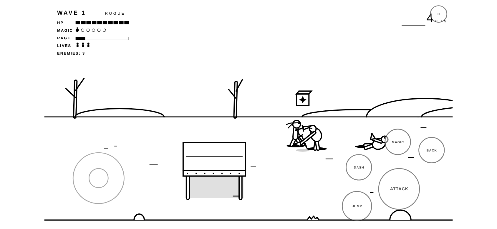
The lane rule
The road has depth: you walk up into it and down out of it as well as along it. Wherever you stand, you are in a lane, and so is everyone else.
There is one exception: the Warrior's sword wave. The third slash of the Warrior's combo releases a crescent of force that rolls forward along the whole road and strikes anything on the ground it passes, in every lane. (Magic also reaches the whole screen, but that is a spell, not a weapon.)
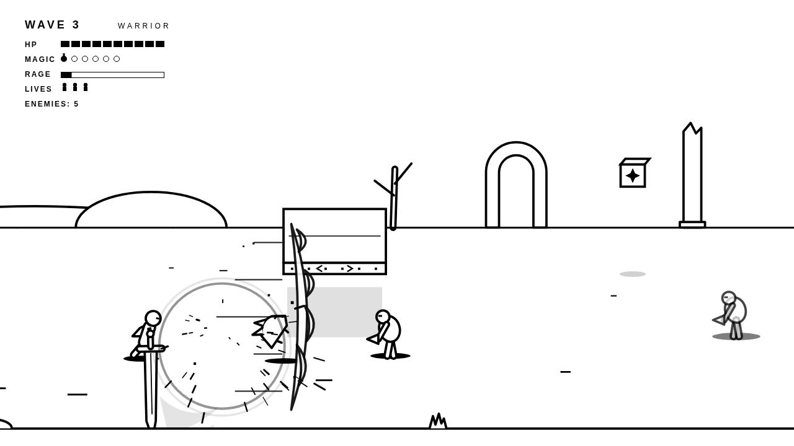
Enemies follow the same idea: they line up with your lane before they attack, and the dotted lines some of them draw on the floor show you the lane their attack will travel down.
The three paths

Warrior · 100 HP
The enormous sword. Slow, heavy, sweeping.
- Combo: 15 → 18 → 28 damage. The third slash knocks down and releases the sword wave (12 damage, every lane, about 400 units).
- Running attack: a shoulder-first lunge that knocks down.
- In the air: a downward slash.
- Back attack: a full spin of the sword.

Archer · 90 HP
Arrows down the lane you stand in.
- Combo: arrow (12), arrow (12), fire arrow (20). The fire arrow pierces everything in its lane, knocks down, and sets its targets burning: 4 damage every half second for about two seconds.
- Running attack: skid and loose one heavy piercing shot (16, knockdown).
- In the air: an arrow angled down at the floor.
- Back attack: a sweeping bow kick.
- The bow tilts up at an enemy in the air, but only if it is in your lane. Arrows stick in the ground where they land and glance off raised shields.

Rogue · 85 HP
Twin daggers. Every strike cuts twice.
- Combo: twin strike (8 + 8), twin strike (8 + 8), cross cut (18, knockdown).
- Dash (Shift/C): a quick dash in any of eight directions, including up and down the lanes. You can't be hit while it lasts. Short cooldown, one dash per jump.
- Dash twin strike: attack out of a dash (or while running) to lunge straight through the enemy line, cutting twice, untouchable.
- In the air: a dagger dive. Back attack: a spin of both blades.
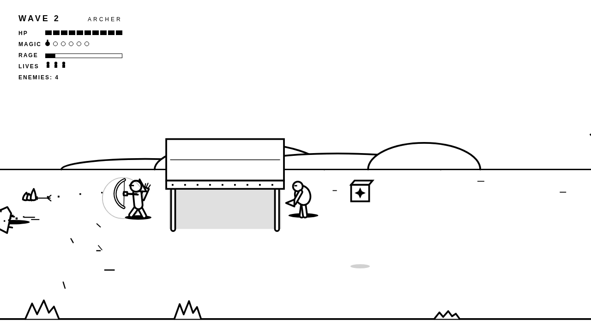
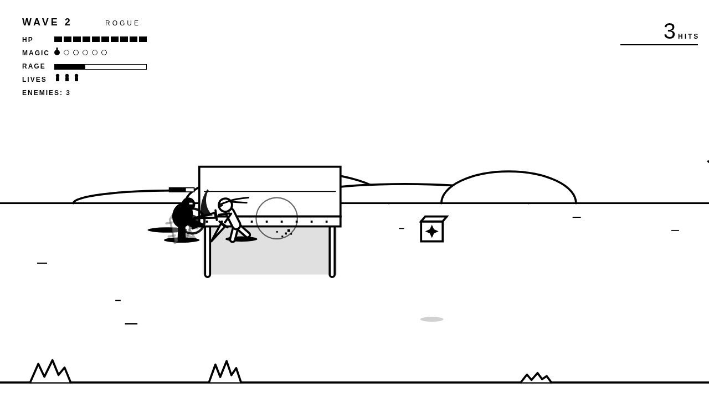
Combat
Windup, strike, recovery
Every attack, yours and theirs, has a windup, a moment where it can hit, and a recovery. Enemies shake and a ring closes in on them before they strike. Their recovery is your opening.
Combos
Keep pressing attack to chain three hits. The third knocks lighter enemies to the floor, where they can't be hit until they stand up.
Running attack
Double-tap a direction (or hold run) and attack. Each class has its own.
Jump attack
Attack in the air: it hits what is below you and knocks down. One per jump.
Back attack
Hits both sides at once. For when you are surrounded.
Grab, knee, throw
Attack an enemy right in front of you to grab it. Keep attacking to knee it twice, then throw it over your shoulder. A thrown body knocks down anyone it lands on in its lane. Big enemies can't be grabbed.
Parry
A sword swing that is active when it touches a thrown axe cuts the axe out of the air.
Knockdowns
Heavy hits, or three hits in quick succession, put you on the floor too. While you lie there and stand up, nothing can hurt you.
Ledges, blocks, powerups and rage
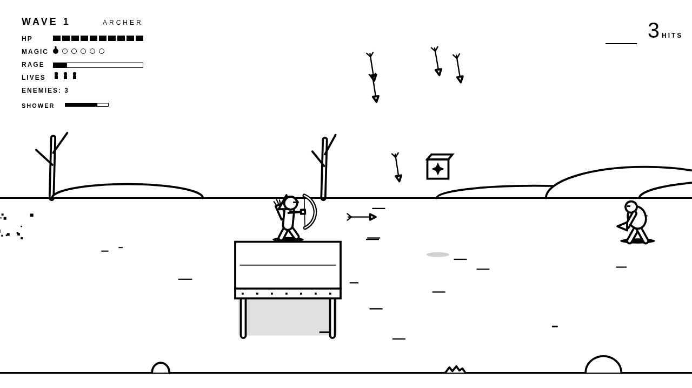
Ledges
Raised slabs on legs stand along the road; a few of them slide back and forth or rise and sink. Jump up through one from below and land on top, and a moving one carries you. Walkers climb up after you if you stay close; flyers don't need to.
Power blocks
Floating blocks marked with a star. Jump into one from below, strike it, or shoot it, and it pops out a powerup. An empty block stays behind and you can stand on it. There are thirteen on the road, and they refill every run.
Heart and force field
The heart gives back 40 HP. The force field (a hexagon) wraps you in a dashed bubble that takes the next three hits for you, for up to 16 seconds.
Class capsule
A pill marked with your class's sign. Warrior: for 12 seconds every sword hit lands in every lane. Archer: for 12 seconds every shot also brings a shower of six arrows down across every lane ahead. Rogue: wings, and 6 seconds of flight to spend within 25 seconds: hold jump in the air.
Rage
The meter fills as you hit, kill and get hurt. When it's full, press R: for 8 seconds you hit half again as hard, move faster, take less damage, and nothing staggers you or knocks you down. The rage burst (a spiked star) fills it at once.
Health bars
An enemy's health shows above it for a moment after you hit it. The Brute and the Elite get a bar across the bottom of the screen. Top right counts your chain of hits until you're hurt or stop hitting.
Enemies drop a heart, a force field or a capsule now and then; Brutes and the Elite always drop one.
Magic, thieves and food
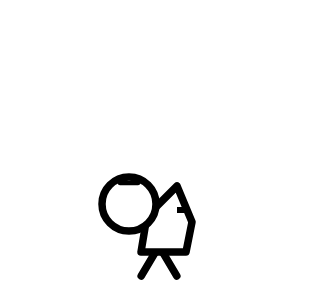
Thieves
Small, harmless, carrying a sack. They wander through some waves and come for you at night. Each hit knocks something loose: usually a magic pot, sometimes bread. After two hits they flee.
Pots and bread
Walk over them to pick them up. You can carry six pots. Bread gives back 30 HP. Unclaimed pickups vanish after a while.
Casting
V spends every pot you carry. The world holds still, the screen flashes into negative, and black spikes erupt from the floor under every enemy on screen: 10 damage plus 9 per pot, and everyone is knocked down. More pots, bigger spell.
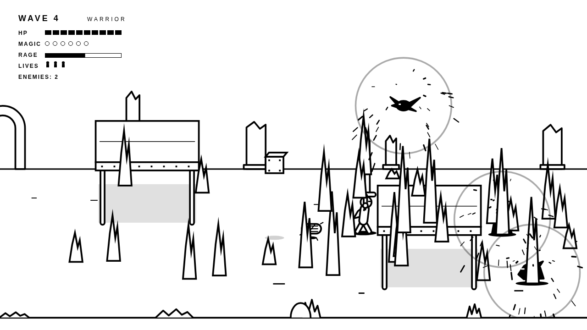
Nights
After waves 3 and 6 the march stops for the night. The whole world inverts: white figures in a black land. Thieves creep in for your sack. Take back what they carry. At dawn you are back to white, with 25 HP restored, and the road continues.
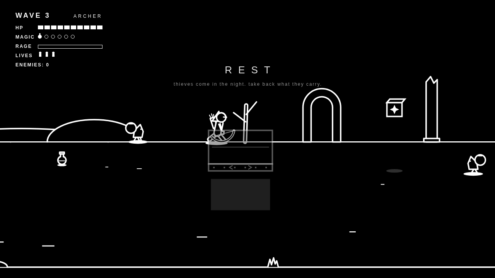
Health, lives and falling
- HP is shown as ten blocks. You recover 15 HP between waves, 25 after a night, and 30 from bread.
- You have three lives. When your HP runs out you fall, and your weapon is left in the ground. If you have lives left, you stand back up where you fell with full HP, and the shock of it knocks nearby enemies off their feet.
- When the last life is gone, the run ends: FALLEN. Press any key to begin again from Wave 1 with the same class.
Enemies
Enemies take turns. Only a few may wind up an attack at the same time (more in later waves); the rest circle you at a distance, waiting for an opening.
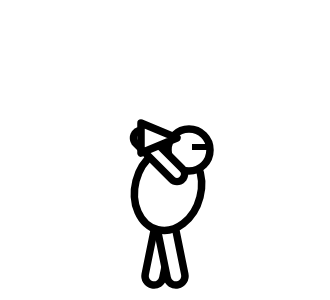
Seeker · 30 HP
Walks up and claws. The basic pressure.
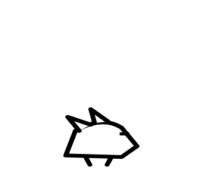
Chaser · 20 HP
Fast. Circles you, lines up, crouches, and lunges down its lane (dotted line). Step out of the lane.
Brute · 100 HP
Slow, can't be staggered. Raises its fists: the dashed box on the floor is where the slam lands. It knocks you down. Punish the recovery.
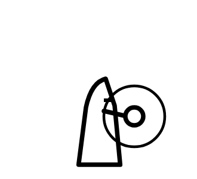
Axe thrower · 25 HP
Keeps its distance, lines up with your lane (dotted floor line), and throws a spinning axe. Change lanes, or cut the axe down.
Flyer · 30 HP
Hovers overhead. Marks its landing spot on the floor, then dives. Stuck on the ground for a moment after.
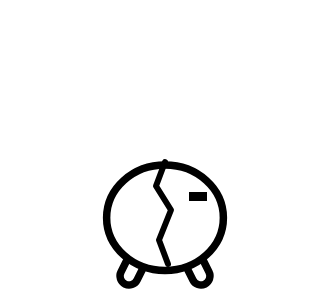
Splitter · 40 HP
When it dies, it splits along its crack into two small, fast Splitlings.
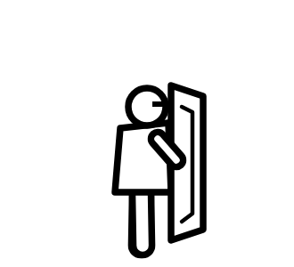
Shielder · 60 HP
Blocks everything from the front, arrows and sword waves included. Turns slowly. Walk around it, hit it from above, or punish its bash.
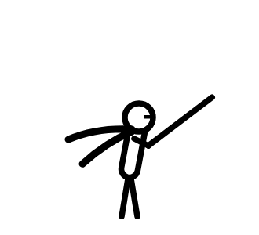
Assassin · 35 HP
Fades almost to nothing and drifts behind you, then reappears and strikes. Its faint trail gives it away.
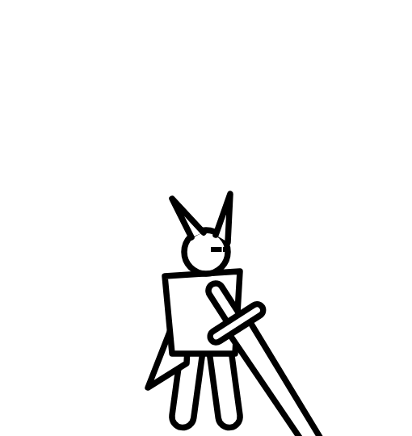
Elite · 170 HP
Takes reduced damage. An axe volley fanned across the floor, a dashing slash down its lane, a slam on both sides. Faster below half health.
The ten waves
| Wave | Where | Enemies | What it teaches |
|---|---|---|---|
| 1 | Plain | Seekers | Walking the lanes, the combo |
| 2 | Plain | Seekers, Chasers, a thief | Faster enemies, leaving a lane |
| 3 | Plain | Seekers, Chasers, an axe thrower | Projectiles. Night follows. |
| 4 | Ruins | Chasers, axe throwers, Flyers | Threats from above |
| 5 | Ruins | Seekers, axe throwers, Brutes, a thief | Heavy enemies |
| 6 | Ruins | Chasers, Flyers, Splitters | Density. Night follows. |
| 7 | Fortress | Shielders, Seekers, Brutes | Positioning |
| 8 | Fortress | Assassins, Chasers, axe throwers, Flyers, a thief | Pressure from every direction |
| 9 | Fortress | A bit of everything | The hardest ordinary wave |
| 10 | The void | Shielder, axe thrower, Flyer; Brute, Assassin, Chaser; an Elite alone; then an Elite with support | Everything you have learned |
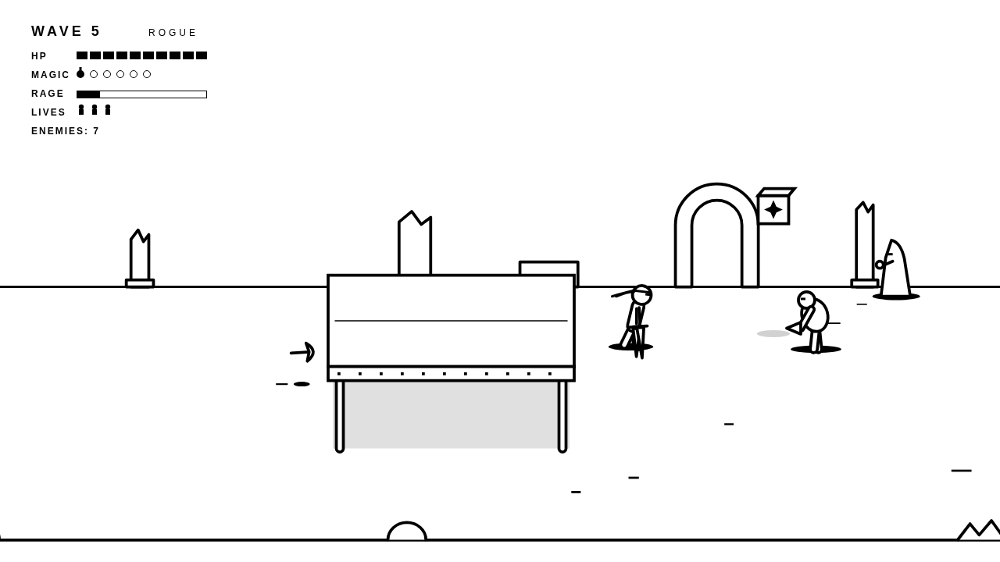
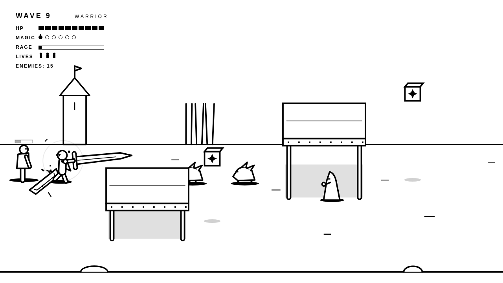
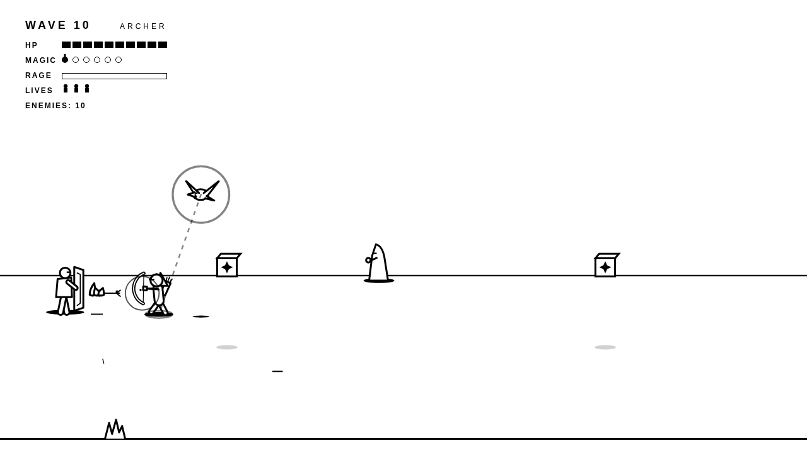
The door
When Wave 10 falls, the fighting stops. At the far end of the road a monolith rises out of the horizon, a door at its foot. As you walk toward it, the door opens, and light pours out over everything: the stone, the road, you. Walk into it.
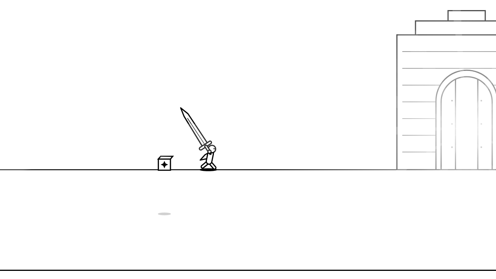
Tips
- Watch the floor. Dashed boxes, dotted lines and target marks show where an attack will land before it does.
- Kill axe throwers early, or stay out of their lane.
- Don't swing at a Brute's windup. Step aside, then hit it while it recovers.
- Save pots for Wave 9 and the Elites. Six pots at once is far stronger than six single casts.
- Warrior: the sword wave is how you reach an enemy in another lane. Finish your combos.
- Archer: range is safety. Line up, shoot, and step out of the lane when something winds up.
- Rogue: the dash is a dodge first. Dash through, then attack out of it.